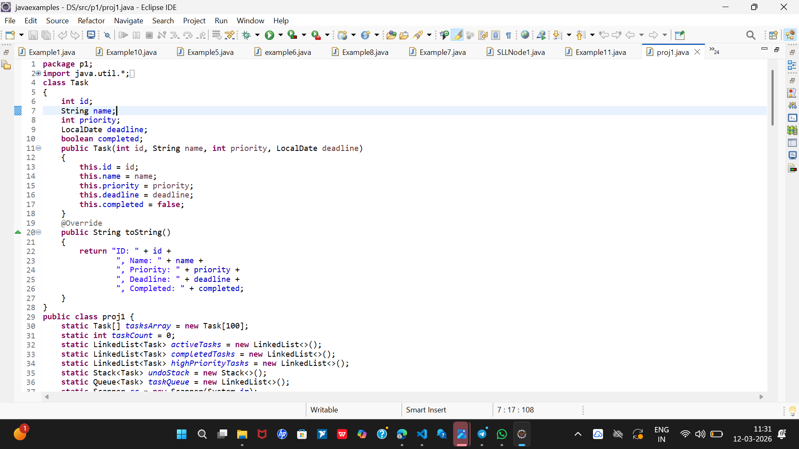
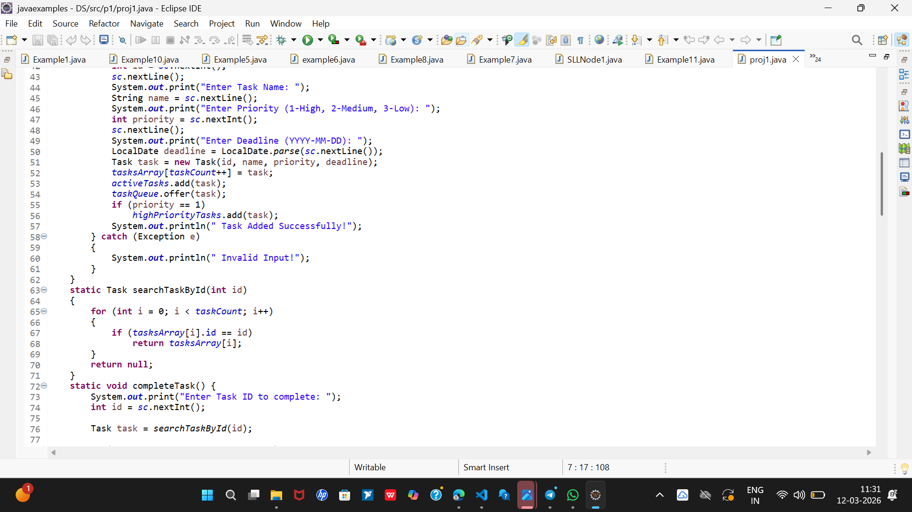

I have worked on small projects such as a Task Scheduler/To-Do Manager and other programming assignments that helped me understand programming concepts better.
This portfolio showcases some of the projects I have worked on and the skills I have learned during my academic journey. I am passionate about creating simple and useful applications and continuously learning new things in the field of technology.

